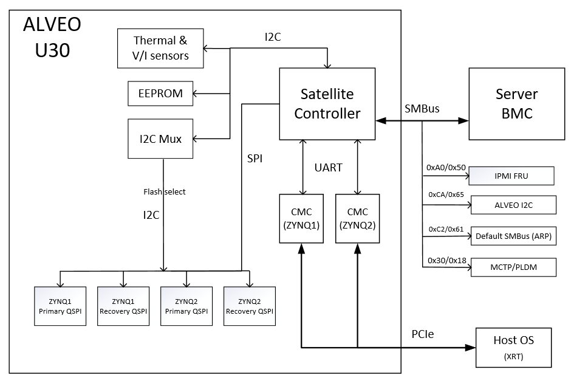

Introduction¶
AMD/Xilinx® Alveo™ Data Center products use the following two communication channels for card management.
Out-of-band communication: The Satellite Controller (SC) firmware communicates with the server Baseboard Management Controller (BMC) via SMBus/I2C interface to provide out-of-band card management functionalities.
In-band communication: The PCIe interface provides In-band management to host for card programming and sensor telemetry. The host CPU communicates via PCIe to the Card Management Controller (CMC) firmware, which runs in MicroBlaze™ on the FPGA. CMC firmware communicates with SC firmware through the UART using a proprietary protocol. All sensor telemetry are passed from the SC firmware to the host through this in-band channel.
Satellite Controller (SC)¶
The satellite controller firmware runs on an external micro-controller unit (MCU) and is an essential component of Alveo card management, providing in-band and OoB communication mechanisms. The MCU, EEPROM and few other peripherals reside on the standby power domain (i.e.) 3V3_AUX.
Alveo™ U2xx, U5x, UL3xxx
In Alveo™ U200, U250, U280, U50, U50LV, U55C, U55N & UL3524 products, SC firwmare running in external MCU monitors all the sensor data via I2C/PMBus. For In-Band telemetry, the sensor data is sent through the UART channel from SC to CMC firmware (running in within the FPGA), which then gets passed on to host drivers (XRT). For OoB telemetry with server BMC, SC supports I2C/SMBus based protocols.
Figure: Alveo™ U2xx, U50x, U55x, UL3524 block diagram
Alveo™ U30
In Alveo™ U30 product, SC firwmare running in external MCU monitors all the sensor data via I2C. For In-Band telemetry, the sensor data is sent through the UART channels from SC to CMCs (running inside both ZYNQ devices), which then gets passed on to host drivers (XRT). For OoB telemetry with server BMC, SC supports I2C/SMBus based protocols. Additionally, SC supports OoB based FPGA firwmare updates via SMBus and hence has direct SPI accesses to the qSPI flash devices.
Figure: Alveo™ U30 block diagram
Alveo™ V70
In Alveo™ V70 product, SC firwmare runs in external MCU. The Versal Managment Controller (VMC) firmware running in Realtime Processing Unit (RPU) within PS subsystem, monitors all the sensor data via I2C and sends them to UC through the UART channel. For OoB telemetry with server BMC, SC supports I2C/SMBus based protocols. For In-band telemetry, VMC sends the sensor data to the host drivers (XRT) via PCIe.

Figure: Alveo™ V70 block diagram
Alveo™ MA35D
In Alveo™ MA35D product, SC firwmare running in external MCU monitors all the sensor data via PMBus/I2C. For In-Band telemetry, the sensor data is sent through I2C from SC to ZSP firmware (running inside both SuperNova ASIC devices), which then gets passed on to host drivers (mautil). For OoB telemetry with server BMC, SC supports I2C/SMBus based protocols. Additionally, SC supports OoB based ASIC firwmare updates via SMBus and hence has direct SPI accesses to the SPI flash devices.

Figure: Alveo™ MA35D block diagram
Satellite Controller Firmware Version
Not all features described in this document are available in older SC FW. Refer to Alveo Data Center Accelerator Card Platforms User Guide (UG1120) to ensure the latest FW is being used.
Out-of-Band Communication¶
When installed in a server, the SC FW communicates with server BMC. The main purpose of OoB communication is to respond to requests that originate from server BMC. It uses this information to take action related to power and thermal management (i.e.) to ramp-up fans or send in-band requests to throttle frequency (where supported) to reduce power consumption.
Currently, only SMBus/I2C is used for OoB communication. The OoB communication supports three protocols. The protocols and their respective I2C slave address (both 7-bit and 8-bit) are given in the following table.
Table: Slave Addresses and Corresponding Protocols
| I2C Slave Address (7-bit) | I2C Slave Address (8-bit) | Protocols Supported |
|---|---|---|
| 0x18 | 0x30 | Standard MCTP/PLDM/SPDM |
| 0x50 | 0xA0 | IPMI FRU data |
| 0x61 | 0xC2 | Default SMBus (2.0) for ARP |
| 0x65 | 0xCA | ALVEO I2C protocol |
IPMI FRU support
SC FW supports IPMI field replaceable unit (FRU) data read at I2C slave address 0x50 (0xA0 in 8-bit). For FRU data access, 2-byte addressing mode is supported and the FRU data contents are explained in (Alveo FRU Data Specification).
ALVEO I2C Protocol
Satellite Controller firmware supports I2C protocol based OoB communication at I2C slave address 0x65 (0xCA in 8-bit) and provides support for server BMC that does not accept MCTP/PLDM protocols, which are part of Distributed Management Task Force (DMTF) specifications.
PLDM Over MCTP Over SMBus Protocol
SC supports the SMBus discovery via the default SMBus 2.0 at I2C slave address 0x61 (0xC2 in 8-bit) and the MCTP/PLDM protocol at I2C slave address 0x18 (0x30 in 8-bit). Alveo OoB implementation adheres to the following DMTF specifications:
- MCTP Base Spec ([DSP0236])
- MCTP SMBus Binding Spec ([DSP0237])
- PLDM Base Spec ([DSP0240])
- PLDM for Platform Monitoring and Control Spec ([DSP0248])
- PLDM for FW Update Spec ([DSP0267])
- SPDM Spec ([DSP0274])
- SPDM over MCTP Binding Spec ([DSP0275])
NOTE: Not all AMD/Xilinx® Alveo™ Data Center products support all the DMTF protocols. The following table provides the list of features/protocols supported in respective Alveo™ products.
Table: List of supported OoB Protocols in Alveo™ products
| OoB Protocol | Version | |
|---|---|---|
| Alveo™ U200, U250, U280, U50, U50LV, U30, U55C, U55N, UL3xxx & V70 | ||
| IPMI FRU support | 1.3 | |
| ALVEO I2C protocol based telemetry | Unversioned | |
| SMBus discovery | 2.0 | |
| MCTP Control Messages | 1.3.0 | |
| PLDM Type 0 Control and Discovery | 1.0.0 | |
| PLDM Type 2 Sensor Telemetry | 1.2.0 | |
| Alveo™ U30 Additional features | ||
| ALVEO I2C protocol based FPGA & SC FW updates via I2C | 1.0 | |
| ALVEO I2C protocol FW measurements | 1.0 | |
| Alveo™ MA35D | ||
| IPMI FRU support | 1.3 | |
| ALVEO I2C protocol based telemetry | Unsupported | |
| SMBus discovery | 2.0 | |
| MCTP Control Messages | 1.3.1 | |
| PLDM Type 0 Control and Discovery | 1.1.0 | |
| PLDM Type 2 Sensor Telemetry | 1.2.2 | |
| PLDM Type 5 Firmware update | 1.0.0 | |
| SPDM Attestation | 1.1.0 | |
AMD Support
For support resources such as answers, documentation, downloads, and forums, see the Alveo Accelerator Cards AMD/Xilinx Community Forum.
License
Licensed under the Apache License, Version 2.0 (the “License”); you may not use this file except in compliance with the License.
You may obtain a copy of the License at http://www.apache.org/licenses/LICENSE-2.0
All images and documentation, including all debug and support documentation, are licensed under the Creative Commons (CC) Attribution 4.0 International License (the “CC-BY-4.0 License”); you may not use this file except in compliance with the CC-BY-4.0 License.
You may obtain a copy of the CC-BY-4.0 License at https://creativecommons.org/licenses/by/4.0/
Unless required by applicable law or agreed to in writing, software distributed under the License is distributed on an “AS IS” BASIS, WITHOUT WARRANTIES OR CONDITIONS OF ANY KIND, either express or implied. See the License for the specific language governing permissions and limitations under the License.
XD038 | © Copyright 2023, Advanced Micro Devices Inc.